Progress Report 1: The German Empire (Part 1)
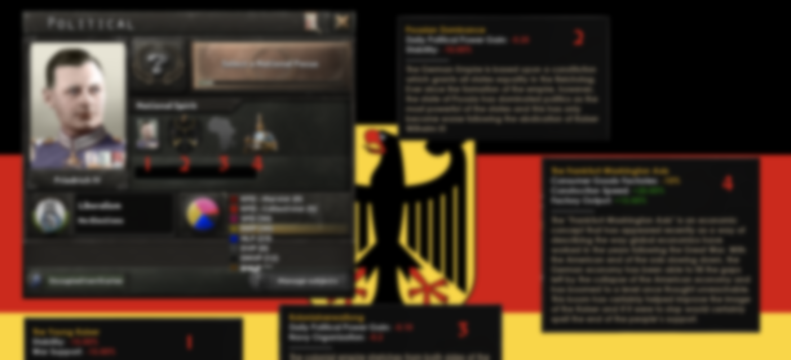Greetings everyone, it's Jubs, AOTR head dev/founder and lead Germany dev, but you may know me as that guy that pings people constantly or the guy who is very vague about teasers, and today we'll be taking a look at the heart of Europe: The German Empire.
Before we get into talking about Germany or the map changes, let me say that this will be the first of at least two German Progress Reports as much of the Focus Tree does not have GFX and I'm currently in the process of redesigning a huge portion of it as well as re-designing the Alsace Referendum mechanic.
First: The Italian Peninsula's Map has been finalized, but the countries will be unveiled at a later date
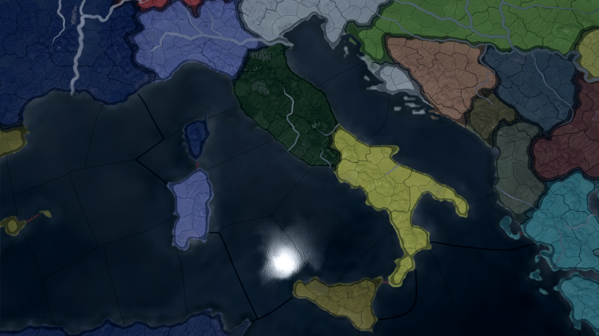Second: The Polish Map has changed to more accurately represent Congress Poland with the addition of Austrian Galicia, but do keep in mind that anything else in the screenshot is subject to change (flag, stability, etc)
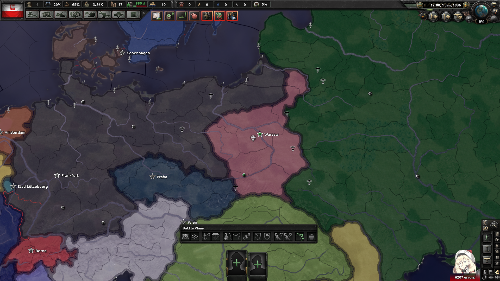Third: The Chinese borders and concessions have been reworked in order to coincide with other map changes (specifically the Russian concessions) as well as Foreign Policy changes that are specific to China and will be revealed at a later date
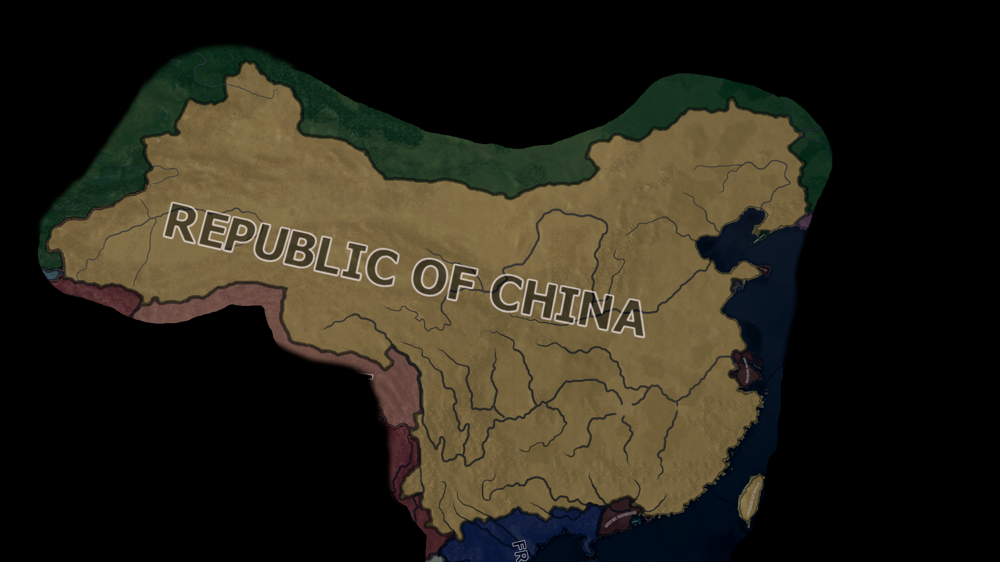As always I want to give a huge thank you to the GFX team for the work they've done on the graphics you're about to see, thanks to Yryes the Pigeon for writing most of the events featured here, and a huge thank you to both the AOTR dev team (that includes all developers, contributors and helpers) as well as the community for always being there and reacting to every teaser. Now, onto what you all came here for:
The German political screen is almost unchanged from the initial teaser except for the KPD being relegated to Collectivism and the SAP (Sozialistische Arbeiterpartei) taking over the Traditional Marxist slot.
The new national spirit, The General Staff has been added in order to acknowledge the importance of the Prussian General Staff.
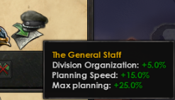The Starting situation of the Empire can be summarized with this event:
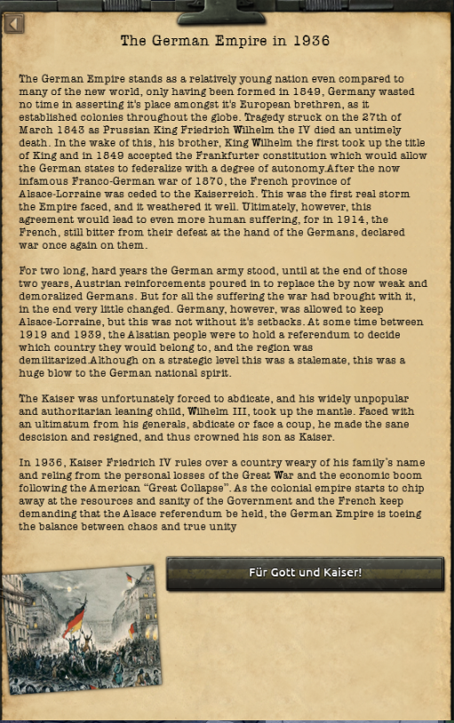The DDP Government headed by Erich Koch-Weser won the Federal Elections of 1929 and 1933 and is on track to win the 1937 election. With the economic boom of the early 1930s has been spearheaded by the party and has solidified public opinion with the DDP and the Kaiser. With the high quality of living and massive amounts of spending by the general populace, the popularity of the radical KPD and SAP have reached record lows. In the Reichstag, the state-by-state divisions have been somewhat quelled by the strong economy, but any and all fluctuations have caused an outcry by the Bavarian Senators as they try to rally the other states into a weakening of Prussia. Despite threatening secession ever since the formation of the Empire, they've never actually submitted their articles of secession. Should the economy start to falter, or in the case of a disaster collapse completely, the Bavarian communist movement will seize the moment to secede and declare war on the Empire.
On the Foreign Policy front, Germany is not alone. Despite the Frankfurt Pakt not having the same amount of prestige as the French Entente-Cordiale, the Pakt still has a respectable power base behind it. The German Empire's massive industrial base and the respectable Imperial Army as well as the Kingdom of Poland's strengths. Aside from Poland, the Pakt's relations with its former allies from the Central Powers, the Duna Paktum, are cordial. Despite not having a formal alliance, the five countries share a similar mindset. The Duna Paktum is, however, not a reliable ally should another war come. Instead of looking towards Europe or the Americas, the German Empire will look towards the Asian Giant: The Republic of China.
Following the end of the Great War, the German government needed money to jumpstart its economy and seeing an opportunity, it gave the Schantung portion of its Chinese concession back to the nascent Republic in order to lessen the burden of managing it. Ever since then, the Chinese government and the German government have had close ties.
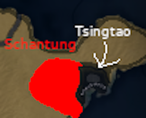Specifically, the Germans have created a Chinese General Staff, licensed weapon and ship designs, and have worked with the Chinese government to build an efficient railroad network.
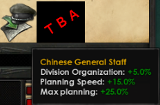All of these things have and will lead to one of, if not the defining moment for the Frankfurt Pakt prior to the Second Great War: Chinese Entry into the Faction which of course comes with a worldwide news event to signify this change in the power dynamic between the Entente and the Pakt.
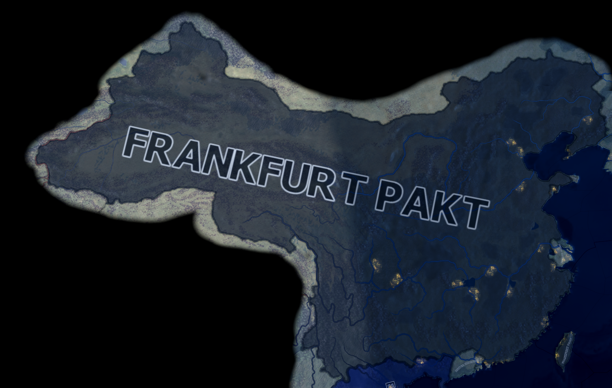 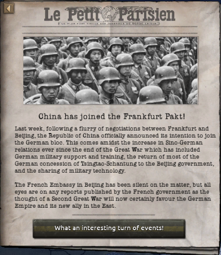That concludes this part of the German Empire's Progress Report, but you didn't think that I wouldn't show off some other fun stuff that I've been working on, did you?
Here is a sneak peak at a part of the Focus Tree that has not been changed, and from what I can tell, will not be changed in the future.
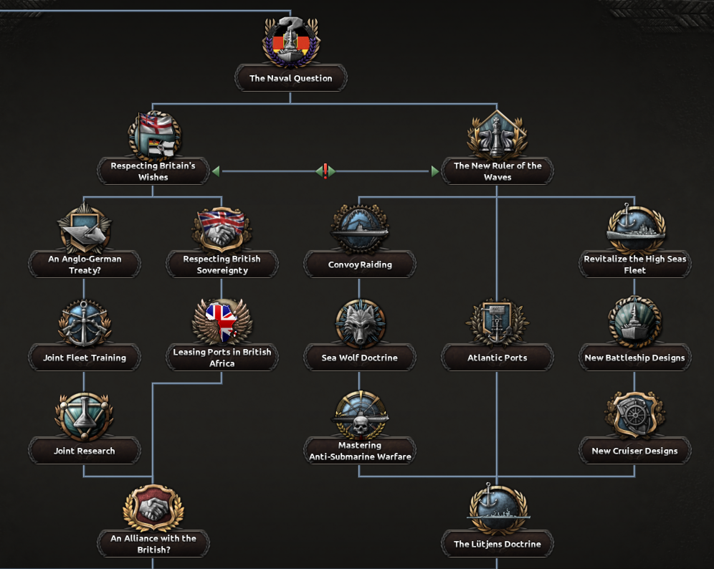Some of you may remember this, the teaser for the Alsace Referendum mechanic. Well that mechanic will still be a thing, but it will be slightly different and is one of the things that has been delayed for the next German PR in order to flesh it out well and to give myself time to actually code it without blowing a fuse.
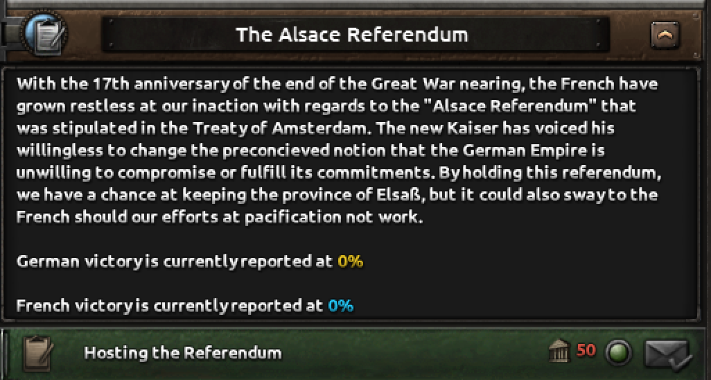Our next Progress Report is on [REDACTED BY WELSH], but I can certainly give you a sneak peak
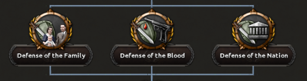